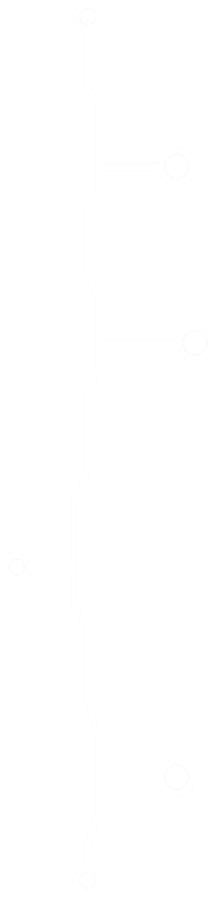
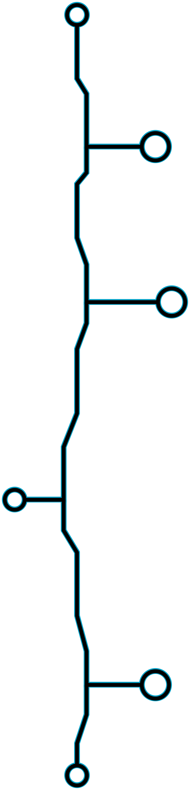

About Me:
I am the creator and owner of this website. My name is Muhammad Saleh Mobeen Qureshi. I created this website to share my skills with other people. Here, you can find the games I have developed, which you can download and enjoy.
My Skills:
In past few years I have developed many skills that help me create this website and exiting games.
- Programming: I started programing with Scratch which is a visual Programming language that taught me the basics of programming and logic. Then I learnt HTML, CSS and Javascript which helped me to understand how textual programming works.
- Speed Cubing: Solving Rubik's cube quickly, with an average solve time of 25 seconds, has honed my problem-solving abilities and enabled me to develop effective solutions.
- Pen Spinning: Penspinning isn't just fun,it's taught me coordination and finger control, making me quicker at typing and writing code fast.
My Future Goals:
My future goals are to explore more programming languages, learn Java and create more softwares.